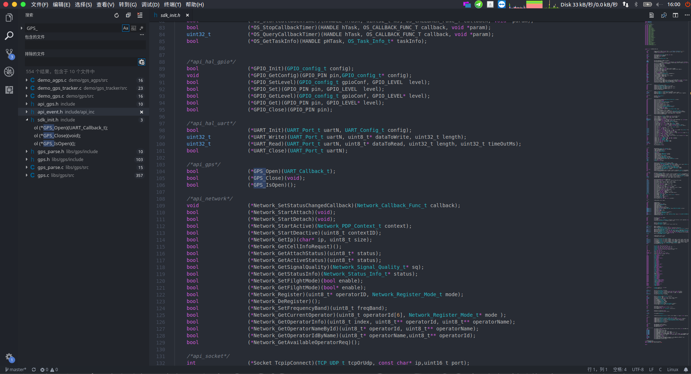

常见问题 Q&A
1. 什么是git,什么是github,有什么区别
在文档中可能会出现git等关键词,git是一个代码托管工具, 代码托管即可简单理解为记录我们的代码修改记录,当我们需要的时候可以随时回到过去的版本, 以及查看在什么时候修改了哪一行代码(没错精确到行).
github则是基于git版本管理工具的一个网站,我们可以把代码放到这个网站,其他人就可以查看并且一起协同修改了.
2. 为什么git clone到本地后编译无法通过
工程使用git进行版本管理,为了让工程的体积不会随着更新疯狂增加,所以使用了子模块,关于子模块的内容可以自行搜索.
因此,执行clone命令后,需要执行git submodule update --init命令对子模块进行初始化和更新,否则SDK文件不全.
或者clone时使用--recursive参数,如果这种方式无法克隆,则使用上面先克隆再更新子模块的方式可以解决
3. 为什么Windows下面和linux下面生成的lod文件大小不一样?
本工程生成的lod文件是字符文件,不是二进制文件,所以会比较大,
总所周知,字符文件在windows和linux下默认的换行符是不同的,
linux下使用的换行符是LF(\n),windows下使用CRLF(\r\n),
所以每多一个换行符,windows生成的lod文件就会比linux生成的会多一个字节,
因此,windows上生成的lod文件会比linux上的lod文件大一点,但是不会对程序有任何影响
4. 为什么没有IDE,没有像keil一样的IDE么?
没有提供IDE,提供单独的工具链(编译链接工具)和下载软件, 编写软件可以自由选择编辑器,
比如使用VS Code,支持跳转,对于没法跳转的可以使用全局搜索,速度很快很方便 
也可以用eclipse开发
5. 为什么有时会无法下载程序到模块?
程序不要进入休眠模式,不要使用while(1){};代码,
以及串口的问题,
可以尝试:按复位键,模块启动后(下载串口的数据通信指示灯开始闪烁)立马点击下载按钮
6. 不用TF卡,可以把数据存到内部flash中么?
SDK集成了文件系统,文件系统就是flash上的,所以对文件系统的操作就可以看成是对flash的操作,可以把配置文件存到文件系统中.
所以,不用TF卡也可以通过文件系统的API将数据存到flash文件系统中
7. TF卡最大支持多大？
16G fat32
8. 支持那些网络? 2G基站关闭了怎么办?
模块使用RDA8955这款芯片,支持4频段:800/900/1800/1900MHz, 在国内建议使用移动卡,移动未宣布关闭2G基站,联通已经决定关闭2G基站 其它地区建议先进行测试
9. 为什么有时候会重启?
重启一般是因为两个原因造成的
- 电源供电不足,导致断电重启
- 系统程序bug
很多情况下都是因为电源问题造成的, 蜂窝网要求电源设计为2A,如果达不到就可能会出现联网通信或打电话或者信号差的时候就会重启
如果使用C SDK编译debug版本的固件,死机后不会重启,会阻塞(除了手动设置了看门狗),如果是debug版本也重启了并且没有自己使用过看门狗功能,那一定是电源的问题 如果使用release版本或者添加了看门狗功能,有可能是程序出现了问题,一般是指针越界操作导致的
10. 编译函数重定义错误
multiple definition of `****'
如果报的错误是函数重定义并且后面跟着一大段文字如下:
multiple definition of `****'
mips-elf-ld: Dwarf Error: Can't find .debug_ranges section.
mips-elf-ld: Dwarf Error: Can't find .debug_ranges section.
mips-elf-ld: Dwarf Error: Can't find .debug_ranges section.
mips-elf-ld: Dwarf Error: Can't find .debug_ranges section.
则是因为函数名与已有的库中的函数名重复.
解决办法:
- 方法一: 修改函数名
- 方法二: 将重定义的函数名添加到
platform/compilation/platform_symbols_to_strip文件中即可编译通过(可以简单地理解成屏蔽了库中的函数)这里这个文件是将库elf文件中的函数的标志去掉,这样链接时就不会报错了，但是这样有可能会导致debug时找不到函数名
另外一个原因可能是代码中确实有重定义即多个函数名相同的函数
11. 阿里云在windows编译报错
比如阿里云在windows上编译报错,是因为阿里云官方的makefile语法不适配cygwin导致的, 阿里云的代码目前只能在linux编译,也许后面会解决
12. 文档和代码不一致或者文档没有说明怎么办?
在开发中的代码可能文档更新不及时,尽量先看已有的文档,在api每个文档的开头都会有重要提示,如果不看可能会遇到坑,
工程的代码也尽量写得比较简单易懂,可以多看看demo下的例程和.h文件,
再不懂则可以提交issue或者论坛发问或者发邮件询问
13. 如何获取IMEI?
可以使用SDK中的API获取,或者用手机扫描模块屏蔽壳的二维码即可得到
14. 为什么总是提示SIM无法识别或者掉卡?
- 检查是否有SIM卡
- 检查SIM接触是否正常,触电不能有胶覆盖(比如有涂三防漆涂到了触电的例子)
- 检查SIM卡线路走线是否正规,尽量离模块近一点,周围不要有干扰,模块的天线引脚和SIM卡引脚相隔比较近,注意走线使其不相互影响
15. 为什么低功耗时达不到说的2mA?
模块低功耗可以达到2mA的电流是没错的,8955通过降低主频以及关闭外设来降低功耗, 如果还有部分外设处在使用中的情况,电流可能不会降下来,以及在信号弱的地方为了保持网络连接,可能会有电流上升的情况
如果进入飞行模式,则GSM/GPRS协议栈关闭,也会大大降低电流,但是无法打电话发短信上网,其它功能正常使用
所以,要使用低功耗尽量关闭外设,保持信号良好
16. 为什么GPS会漂,不是说好的定位精度5米么?
GPS在空旷的环境中可以有比较理想的效果,在有遮蔽的地方会对定位精度有影响
17. 可以使用arduino开发么?
目前不可以,没有移植arduino库,有兴趣学习的可以自己尝试移植试试
18. 为什么定时器的时间不是十分准确?
定时器是软件定时器,不是硬件定时器,不适用在高精度的定时任务上。
由于是软件定时器，时间到了会产生事件，这个事件会在OS_WaitEvent进行处理，
并且开启定时器时设置的回调函数也是在这个函数里面进行调用。
综上所述，
在使用定时器时有些地方需要注意，因为是软件定时器并且有事件调度，所以必须有地方用OS_WaitEvent及时接收、处理来自定时器的事件，
尽量不要在回调函数里面处理太长事件，以免影响一下个定时器的事件及时接收处理；
建议使用一个单独的优先级最高的任务来专门处理定时器事件，具体可以参考demo/timer_soft
19. 使用OS_Malloc后，为何调用OS_GetHeapUsageStatus查询剩余堆空间值一直不变
原因请查看文档中os部分的OS_GetHeapUsageStatus函数说明，分配小空间后调用这个函数的返回值可能不会有变化
20. 死机： 在SXR 01调试等级有打印出 No more envelope
原因是使用了OS_SendEvent函数来发送事件，但是没有及时处理事件导致满队。
需要使用OS_WaitEvent来等待事件并处理，比如所有例程中都以一个主任务用来处理底层发来事件，
同理，如果不去接收处理来自底层的事件，经过很长时间队列满后也会溢出出现死机
解决方法：检查哪些地方调用了这个函数，并且检查哪里有没有及时处理这些发送的事件，保证事件在队列满之前及时处理掉就可以了